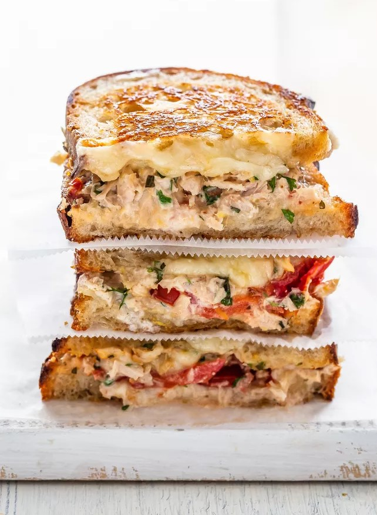

Tuna Melts

Description
Delicious melted cheesy tuna sandwiches.
Ingredients
- 1 (1 pound) loaf French bread
- 1 small sweet onion, peeled and diced
- 1 (12 ounce) can tuna, drained
- 2 cups mozzarella cheese, shredded
- 1 cup mayonnaise
Steps
-
Preheat oven to 350 degrees F (175 degrees C).
-
In a mixing bowl, combine sweet onion, drained tuna, mozzarella, and mayonnaise. Mix thoroughly.
-
Spread tuna mixture on slices of French bread to form a sandwich. Place sandwiches on a cookie sheet.
-
Bake in a preheated oven for 10 minutes.